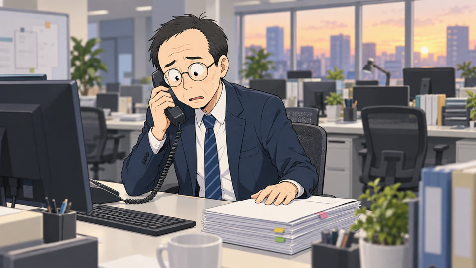
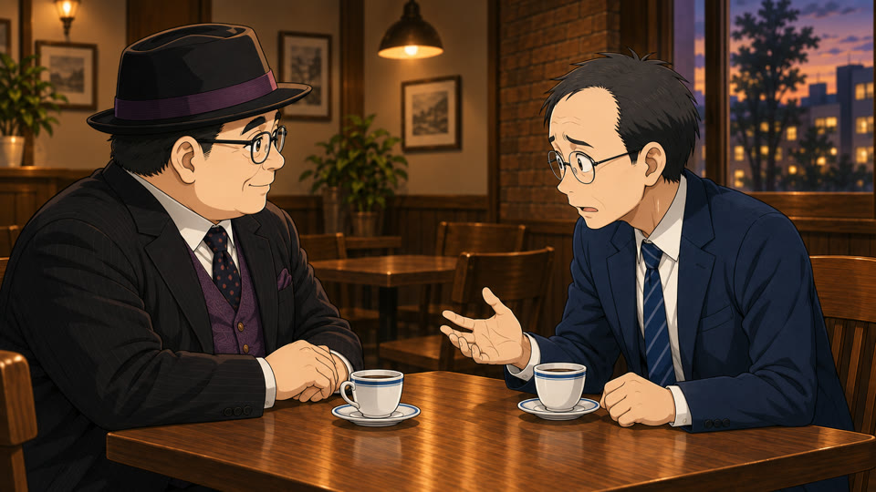

僕も、ずっと断れませんでした。
はじめまして、都合です。52歳、会社員。会社に入って30年、頼まれた仕事は全部「自分がやっておきます」で引き受けてきました。
-

前は
仕事を全部抱えこんで、夕方になっても電話と書類に追われていました。しんどくても「まだ大丈夫です」と笑っていました。
-

喫茶店で
帰りに寄った喫茶店で、小野寺さんに本音をこぼしました。そこで、断らずに自分の状況を伝える言い方を教わりました。
-
次の朝
「この件、やっぱり厳しいかもしれません」。課長に言ってみると、怒鳴られませんでした。そんなことは、はじめてでした。
言い方を1つ変えただけで、毎日が少し変わりました。LINEでは、僕がそうやって覚えてきた言葉を、そのままお渡ししています。